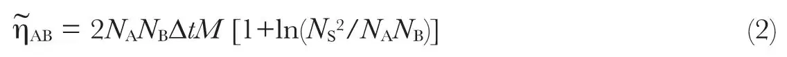
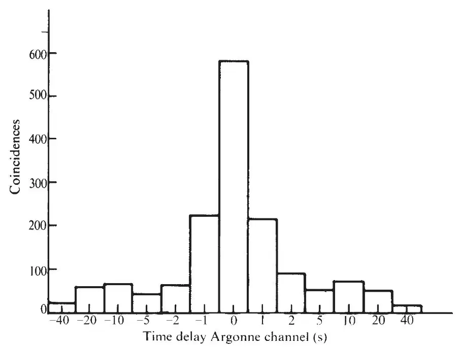
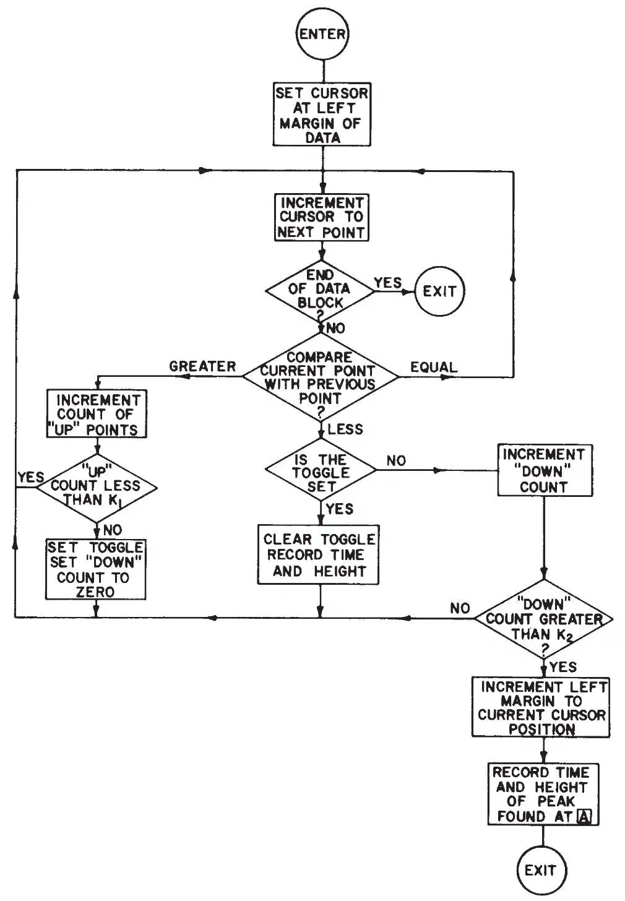

中文
中文J. Weber
Editor’s Note
Within the context of general relativity, gravitational radiation is expected to come from massive and compact objects such as neutron stars and black holes. Joseph Weber designed and built two antenna systems for detecting gravitational radiation, separated by about 1,000 km. Here he analyses signals obtained from them, and finds coincidences in detection that he interprets as evidence for gravitational waves passing through the instruments. The claim is now known to be wrong, but the paper helped to launch the field of gravitational-wave detection. Indirect evidence for gravitational radiation was later seen in observations of the orbit of a millisecond pulsar, but a direct detection remains to be achieved. 中文
MY earlier publications1 have reported the concept, theory, and development of an antenna to detect gravitational radiation. These antennae are well isolated from the local environment by acoustic and electromagnetic shielding but they do respond to sufficiently large local disturbances. Effects of the local environments can, however, be minimized when two detectors are used which are a considerable distance apart. For this reason coincidence experiments at 1,661 Hz were carried out with two antennae, one situated at the University of Maryland and the other 1,000 km away at the Argonne National Laboratory. 中文
For all experiments reported here the only coincidences which were recorded were those which occurred within a predetermined time Δt. 中文
Coincidences may be due to excitation of both detectors by a common source or to chance. It is customary to compute the chance (accidental) coincidence rate by formulating a classification scheme for the coincidences and computing the number of chance coincidences in each class. A significant excess of detected event over the chance coincidence rate for a given class establishes with a certain level of confidence that not all coincidences are due to chance. 中文
For two years the experiments were done as follows. The outputs of the Maryland and Argonne detectors are obtained from synchronous detectors which have free running crystal reference oscillators and twin channels with the reference shifted by π/2 in one of them. The two channel outputs are squared and summed to recover the power, with a time constant of 0.5 s. The envelope of the total power output of the Argonne detector was transmitted over a telephone line to Maryland, in coded digital form, and reconverted to analogue d.c. at Maryland. The outputs are fed to a coincidence detector. If both channels cross some preset threshold from below, within the time interval Δt, a pulse is emitted to drive a recorder marker pen. 中文
The amplitudes of the noise pulses have a Rayleigh distribution, and their shapes vary widely. Analysis is simplified if all pulses have roughly the same shape, because then one parameter, the pulse height, will suffice for their classification. To shape the pulses properly a second stage of filtering is carried out after coincidence detection. There is a small amount of additional filtering associated with the mass of the pen which records the output on a chart. 中文
A mean solar day is chosen as the unit of time. Consider a given coincidence with power amplitudes PA and PB for the two channels. Let NA and NB represent the number of times per day that the powers PA and PB are equalled or exceeded, on the average. Let Δt be the maximum time between threshold crossings for the two channels in order to record a coincidence. The expected number of chance coincides with amplitudes equal to or exceeding those observed for an experiment with effective duration M days is ηAB with
ηAB = 2NANBΔtM
(1)
To employ equation (1) we select some arbitrary numbers which may or may not be the same for channels A and B. A given class consists of all those coincidences for which NA and NB each are equal to or less than the arbitrarily selected numbers for them. 中文
A second classification scheme was employed in order to determine if the difference between the observed and chance coincidences is sensitive to details of the statistical methods. Instead of requiring NA and NB each to remain within certain bounds for a given class, we require the product NANB to be equal to or less than some arbitrary number for a given class. The total number of such chance coincidences will be finite because neither NA nor NB can ever be less than one or greater than the total number of pulses observed for each channel. The most useful classifications are those for which NA and NB are less than some number NS which is about an order greater than the numbers which characterize most of the real coincidences classified by equation (1). 中文
A two dimensional space with NA and NB as coordinates is useful to calculate the number of chance coincidences for which the product NANB is equal to or smaller than some constant and for which neither NA nor NB exceeds some maximum value NS. is expression (1) plus the integral under the hyperbola NANB = constant, that is

In equations (1) and (2) M is smaller than the actual number of days which the experiments run, because allowance must be made for the detector relaxation time after crossing the threshold. A new coincidence cannot occur during this time. 中文
Early experiments5,6 observed that the number of coincidences for certain values of NA, NB, NANB substantially exceeded the accidental rate computed from equations (1) and (2). These gave about the same numbers for the difference of the observed and chance coincidences. The conclusion that positive results are obtained is based on certain assumptions—for example that the classification scheme based on amplitude alone with the successive filtering is sound. To test this, a parallel experiment was done to measure the accidental rate by inserting time delays of varying length in one channel or the other. 中文
This time delay experiment showed a large decrease in the number of coincidences for which NA, NB ≤ 100; and also those coincidences for which NANB ≤ 6,000 with NS ≤ 1,000 for all time delays significantly larger than Δt. There is a subjective element in the data processing, in that for each coincidence mark the leading edge of the pulse must be examined. If it increases smoothly to a peak then the peak value is the required amplitude. If there is a discontinuity in slope before reaching the peak it is concluded that the excitation which results in a threshold crossing was followed at the discontinuity by a heat bath noise excitation. The required pulse height is then only the value measured to the point of discontinuity. Sometimes the discontinuity is not well defined and a human decision is needed. 中文
Using a magnetic tape and a computer provides an independent procedure for data processing. The human element is only involved in the program preparation. A variety of thresholds and time delays can be applied to any stretch of data. The synchronous detector output with 0.5 s filter time constant was recorded in digital form every 0.1 s with both channels on one tape. A computer program was prepared by Mr. Brian K. Reid in the following way: thresholds were set such that if both channels crossed from below within 0.5 s the computer measured the pulse heights after a second stage of 5 s time constant filtering and a third stage of filtering with 0.5 s time constant to simulate the ink recorder pen. Then the computer counted the number of times the filtered data amplitude was equalled or exceeded for the previous hour, the previous 6 h, and the given day following the schematic diagram in Fig. 2. The same procedure was repeated for time delays of 1 s, 2 s, 5 s, 10 s, 20 s and 40 s. 中文

Fig. 1. Computer analyses of magnetic tapes, October 1970–February 1971. 中文

Fig. 2. Computer program for statistics of coincidences recorded on magnetic tape. 中文
The program was inaccurate beyond 20 s delay and the bin values given in Fig. 1 for 40 s delay are much too small. A subsequent computer program has verified that there is no further decrease in the chance coincidence rate for delays exceeding 100 times the coincidence window. 中文
The pen and ink records show pulses with relatively smooth leading edges. The greater time resolution of magnetic tape results in pulses with a certain roughness everywhere. It is therefore difficult to prepare a program which measures the pulse height to a point of discontinuity in leading edge slope. The computer defines the peak as the point where a trend of increases is followed by a trend of decreases. Detailed study of greatly expanded pulses indicates that this is a sound procedure for most of the coincidences. Because of the 5 s averaging it is expected that the pulse peak will be reached between 2 and 15 s after the threshold is crossed and only those coincidences are recorded which reach peaks within such an interval. This range of values is required because of noise and the initial conditions of charge on the capacitors of the filter. The computer measures the area of the pulse, but this is not included in the statistical analysis. 中文
A small fraction of the coincidences are not found by the program because no peak is found in the required interval following threshold crossing. Detailed plotting usually permits the peak to be identified within the required time after threshold crossing. Such coincidences are not included in these data in order to conserve computing time and costs. 中文
Results are shown in Fig. 1 for all coincidences for which NANB ≤ 10,000 and NS ≤ 1,000. The low intensity coincidences are often counted more than once if threshold is crossed and re-crossed in the presence of noise. The histogram therefore shows about twice the real number of coincidences for the 120 day period covered by the tapes. All data of Fig. 1came from the computer and not from human examination of printed lists. 中文
It is significant that for delays in either channel as small as twice the coincidence interval Δt, the coincidence rate drops by a factor about 2.5. At delays of 20 s the coincidence rate is down by roughly a factor 10. These data, untouched by human hands, leave no doubt whatsoever that the gravitational radiation detectors, separated by 1,000 km, are being excited by a common source. 中文
Before we can conclude from Fig. 1 that the source is gravitational radiation, it is essential to rule out other presently known interactions including seismic, electromagnetic, and cosmic ray effects. 中文
The detectors are coupled to each other by the Earth and respond to sufficiently large seismic events. A number of seismometers were developed including a vertical axis accelerometer tuned to the detector frequency of 1,661 Hz, a three axis accelerometer covering frequencies near 100 Hz, and a two axis tilt meter. No significant correlations were observed between seismic activity and the coincidences. 中文
Electromagnetic signals may enter the instrumentation through the vacuum chambers and through the cables and shields of the electronic equipment. Experiments were carried out to measure the susceptibility to electromagnetic excitation. It was found that 1,661 Hz magnetic fields of amplitude about 0.1 Gauss will excite the detector, and much larger fields at 830.5 Hz will also excite the detector. Non-linear effects are expected because the electromagnetic stress tensor is quadratic in the fields, and electromagnetic stresses can cause mechanical forces on the detector cylinders. The response is large at 1,661 Hz because the electronics has its acceptance band there and because 1,661 Hz currents in the aluminium cylinder give forces by interacting with the Earth’s magnetic field. 中文
Both laboratory sites are to some degree shielded as a result of grounded metal ceilings and structures around the apparatus. A radio receiver was employed at the Maryland site, with non-linear pre-amplifier and post-amplifier tuned to a narrow band of frequencies near 1,661 Hz. The receiver sensitivity could be adjusted to respond to fields much smaller than those which excite the gravitational radiation detectors. Magnetic and electric dipole antennae were employed at different locations and with different orientations at various times. Local electromagnetic fields associated with air conditioning, magnetic tape recorders, and power line fluctuations limited the radio receiver sensitivity to values about three orders smaller than those to which the gravitational radiation detector responds. No significant correlations were observed with the gravitational radiation detector coincidences. 中文
There is additional evidence that the coincidences are not due to electromagnetic or seismic interactions. The gravitational radiation detector system input temperature has been measured by a noise generator. This resulted in an accurate accounting of all significant signal sources and ruled out the possibility that any significant fraction of the input temperature is due to some background other than internal noise. If the coincidences are caused by terrestrial effects such as seismic and electromagnetic activity, these must give signals arriving simultaneously or nearly simultaneously at both sites from a region on or within the Earth. For each coincident arrival at the two locations, however, there must be many individual arrivals, and these would result in a higher system noise level than is observed. Measurements were also carried out of coincidence rates for a pair of gravitational radiation detectors at the Maryland site over a period of six months. Within limits of experimental error the one-site, two-detector coincidence rate was identical with the separated-site two-detector coincidence rate. This indicates that for the sensitivities reported here, the isolation from the local environments was adequate and that electromagnetic and seismic interactions do not cause the observed coincidences. 中文
The separation of 1,000 km makes a cosmic ray shower explanation very unlikely. Nonetheless it was important to investigate the effect of cosmic ray charged particles. Professors N. Sanders Wall and Gaurang B. Yodh and Dr. David Ezrow instrumented one of the Maryland site gravitational radiation detectors with Čerenkov radiation counters and later with meter square plastic scintillators. They observed no significant correlations with the gravitational radiation detector coincidences7. 中文
A search was made for coincidences between a 1,661 Hz gravitational radiation detector and a 5,000 Hz mode of a second gravitational radiation detector, both at the Maryland site. No excess of coincidences above the chance rate was observed. Subsequent investigation showed that the 5,000 Hz mode was a bending mode and not a compressional mode. General relativity theory predicts that this bending mode should not interact with gravitational radiation. The lack of coincidences is thus evidence against a non-gravitational radiation origin for the 1,661 Hz coincidences. 中文
Other papers have presented evidence that there is anisotropy of the observed coincidences, the maxima occurring in the direction of the galactic centre8. Experiments with a disk were consistent with predictions of Einstein’s pure tensor theory. Small effects of the local environment can affect the anisotropy in a significant way. To average these properly at least six months of data are required. The magnetic tapes considered here did not have times continuously written. Gaps and recorder failures left insufficient data for a study of the anisotropy. Visual examination of the lists of coincidences found by the computer implied that the data are consistent with the earlier anisotropy experiments based on human observer study of pen and ink recorder charts. 中文
The present data are free of human observer bias. No assumptions are made concerning the duration of expected pulses or their shapes beyond the requirement of a fairly smooth leading edge. This is important because addition of noise will change the shape of received pulses. It is considered established beyond reasonable doubt that the gravitational radiation detectors at ends of a 1,000 km baseline are being excited by a common source as a result of interactions which are neither seismic, electromagnetic nor those of charged particles of cosmic rays. 中文
I thank F. J. Dyson, V. Trimble, and G. R. Ringo for valuable discussions and D. J. Gretz and J. Peregrin for maintaining and operating the gravitational radiation detectors. This work was supported in part by NSF and in part by the Computer Science Center of the University of Maryland. 中文
(240, 28-30; 1972)
J. Weber: Department of Physics and Astronomy, University of Maryland, College Park, Maryland.
Received April 19; revised August 4, 1972.
References:
1. Weber, J., Phys. Rev., 117, 306 (1960).
2. Weber, J., in General Relativity and Gravitational Waves, chap. 8 (Interscience, New York, London, 1961).
3. Weber, J., in Relativity Groups and Topology, 875 (Gordon and Breach, New York, 1964).
4. Weber, J., Nuovo Cim. Lett., Series I, 4, 653 (1971).
5. Weber, J., Phys. Rev. Lett., 22, 1320 (1969).
6. Weber, J., Phys. Rev. Lett., 24, 276 (1970).
7. Ezrow, D., Wall, N. S., Weber, J., and Yodh, G. B., Phys. Rev. Lett., 24, 17 (1970).
8. Weber, J., Phys. Rev. Lett., 25, 180 (1970).
9. Weber, J., Nuovo Cim., 4B, 197 (1971).